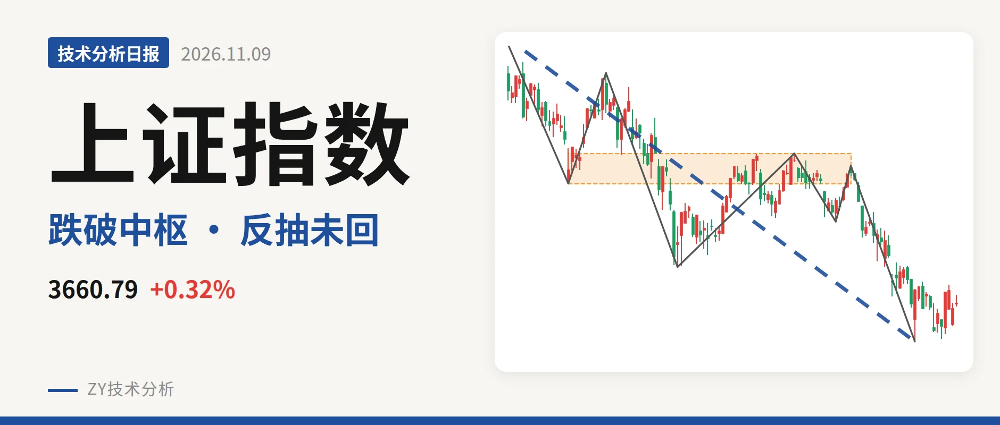
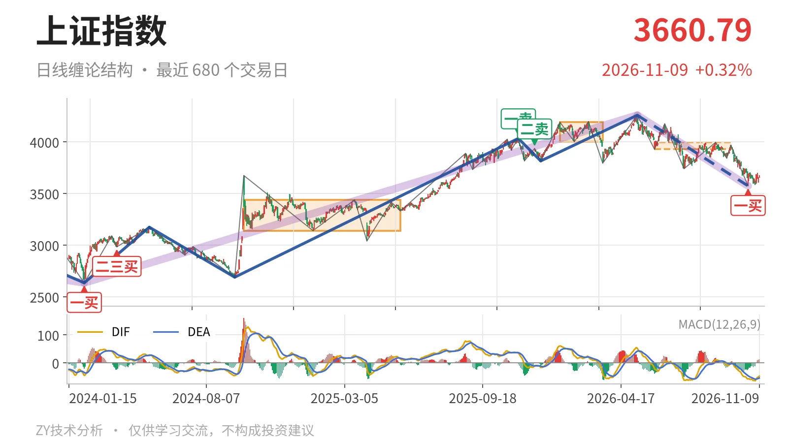
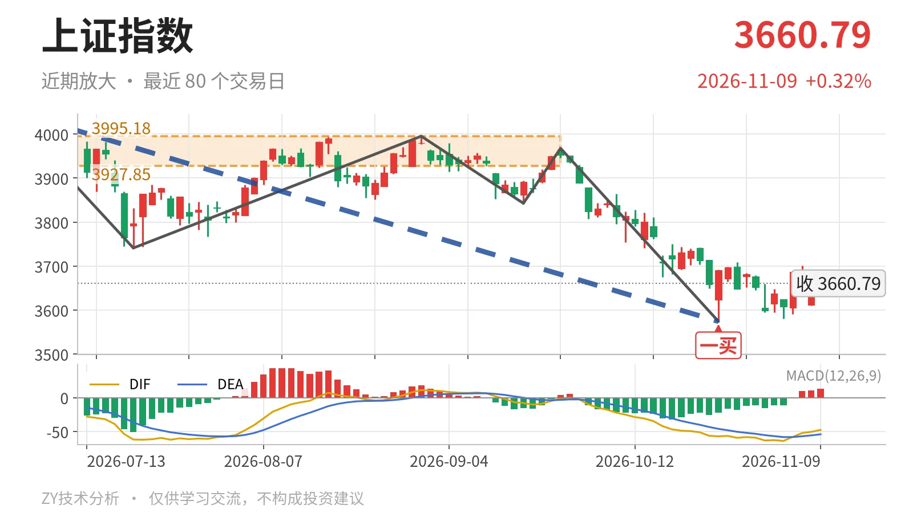

上证指数｜破中枢下沿 反抽看3928点

最近日线中枢 3927.85—3995.18点，收盘位于中枢之下
一句话：跌破3928点中枢下沿，反弹未成笔，弱势整理。
📉 走势结构：上涨线段结束，下跌线段还在延续
更大级别里，2024年2月5日至2026年5月14日的上涨段从2635.09点走到4258.86点，之后5月14日开启的下跌段还没有结束。日线线段上，2025年12月16日至2026年5月14日的上涨线段已经在4258.86点结束；5月14日至10月23日的下跌线段还在延续，内含7笔。当前10月23日之后只是反抽，尚未形成新的日线笔，下跌线段结构没有改变。

📍 中枢与位置：跌破最近中枢，中枢下移
最近的日线笔中枢是6月8日至9月22日的3927.85—3995.18点，尚未完成。11月9日收于3660.79点，低于该中枢下沿约267点。前一个日线笔中枢1月14日至3月23日的区间是4002.78—4190.87点，到当前中枢明显下移。更大级别看，价格仍站在2021年7月28日至2023年5月9日的线段中枢3312.72—3418.95点上方，但最近笔中枢已经跌破，小级别走弱。
🧭 买卖点：10月23日一买只是笔级别
日线笔级别上，10月23日出现一买3574.27点，所在下跌笔已经结束。此后反抽最高到3708.20点，离最近中枢下沿3928点还有一段距离，尚未回到中枢内部。11月9日最低3580.38点没有跌破3574.27点，一买未被破坏，但也没有扭转线段下行。该一买仍只是日线笔级别，对5月14日以来的下跌线段影响有限。

⚖️ 背驰：价格新低，绿柱面积反而扩大
最关键的比较是9月22日至10月23日下跌笔与6月23日至7月20日下跌笔。前者低点3574.27点，低于后者的3741.11点；DIF低点从-61.8回升到-57.1，但绿柱面积由289扩大到347。价格创新低时DIF未创新低，绿柱面积却同步放大，不是标准的“新低不新弱”。最新DIF仍为-47.6，在零轴下方，反抽力度不算强，因此10月23日一买只支撑一个日线笔级别反抽。
🔎 关键位置观察：反抽不回3928点将构成三卖
当前反抽最高3708.20点，收盘3660.79点，均低于3928点。若反抽不能回到3927.85—3995.18点中枢内部，结构上构成日线三卖。重新站上3928点上方，则5月14日以来的下跌更可能只是中枢扩展，而非向下离开。下方3574点附近是关键：若再次跌破3574.27点，10月23日一买被破坏，下跌线段继续延伸。当前结构偏弱，弱在反抽未回中枢下沿、背驰不充分；但3574点未破，尚处于观察区。
⚠️ 本文为基于公开行情数据的缠论技术结构记录，由程序自动计算并生成，仅供学习交流，不构成任何投资建议。市场有风险，投资需谨慎。